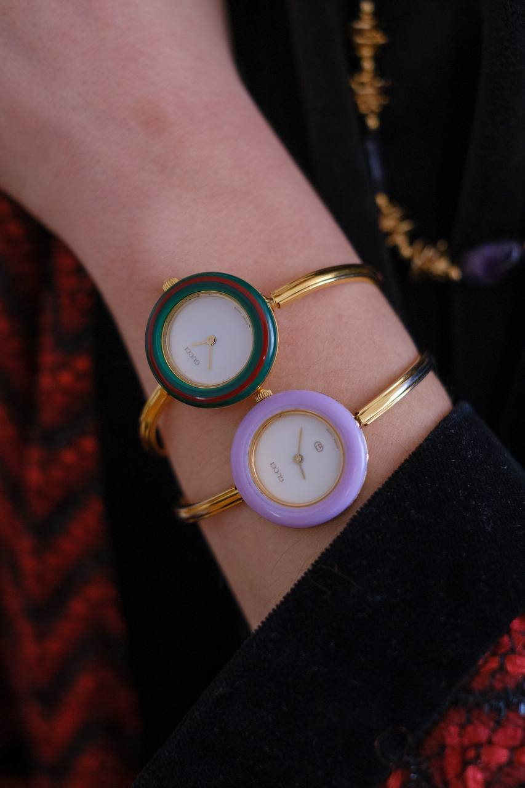
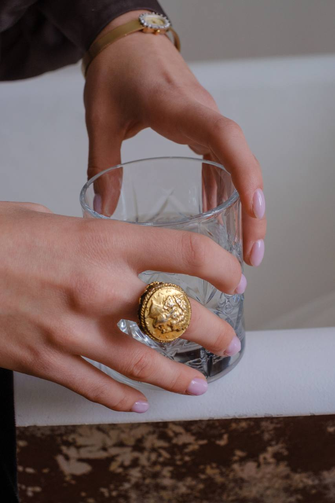
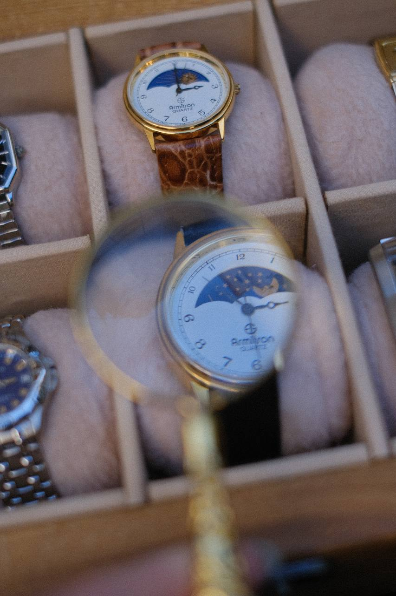
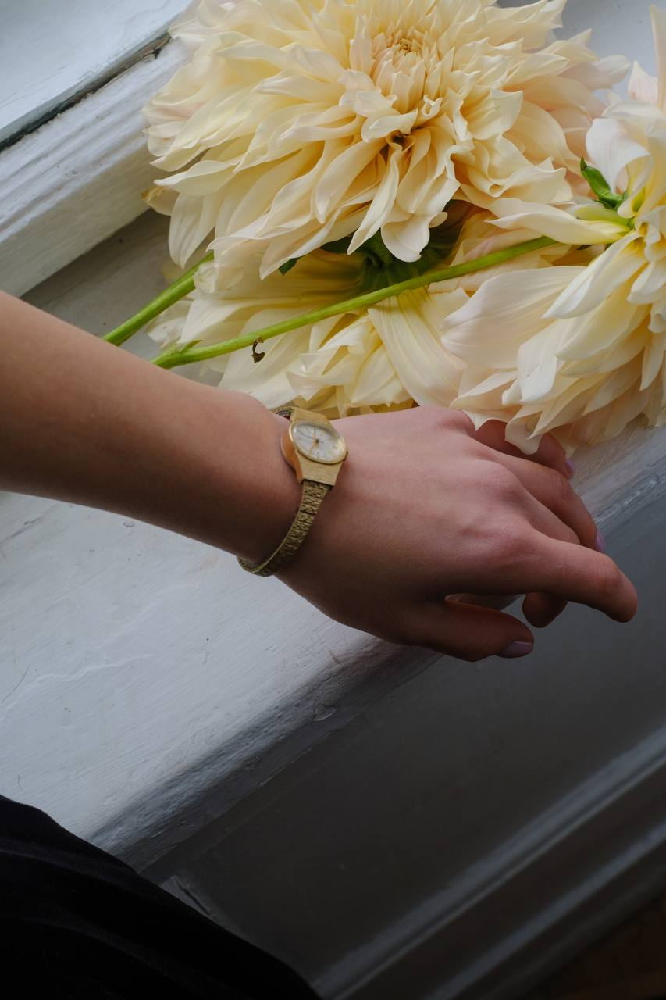

створено часом
presented in Budapest, Prague, Warsaw

Ми локальна крамничка вінтажних годинників з душею та характером зі Львова, заснована у 2019 році
У нашому затишному корнері представлені вінтажні та антикварні годинники з багатьох куточків світу, автентична швейцарська механіка, елегантні годинники французької, данської та інших європейських мануфактур. Чому саме вінтаж? Вінтаж - про характер, неповторний вайб та якість, перевірені часом.
Так, ми ретельно перевіряємо і тестуємо годинники у спеціалізованій майстерні...
Наші годинники приїжджають із США, Канади, Японії, Франції та інших куточків Європи...
Ретельна перевірка у спеціалізованій майстерні, увага до деталей та 5-річний досвід.